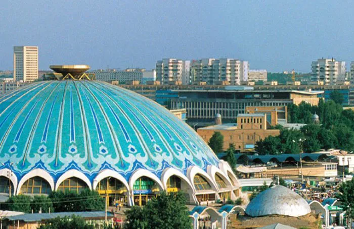

Mening Sevimli Shahrim: Toshkent
1. Amir Temur maydoni
Amir Temur maydoni - Toshkent shahrining markazida joylashgan va shahar
tarixining ramzi hisoblanadi. Ushbu maydonda Amir Temur haykali
o'rnatilgan.

- Maydon 1882-yilda tashkil etilgan.
- Amir Temur haykali 1993-yilda o'rnatilgan.
-
Bu joy shahar aholisi va mehmonlari orasida sevimli sayr qilish
maskanidir.
2. Mustaqillik maydoni
Mustaqillik maydoni - Toshkent shahrining asosiy maydonlaridan biri
bo'lib, u O'zbekiston mustaqilligining ramzi hisoblanadi. Bu yerda
Mustaqillik monumenti va sevgi bog'i joylashgan.

-
Maydon 1991-yilda Mustaqillik e'lon qilinishi sharafiga qayta nomlangan.
- Asosiy haykal "Baxtiyor ona" nomi bilan tanilgan.
-
Fontanlar va gullar bilan bezatilgan maydon yoz oylarida ayniqsa
chiroyli.
3. Chorsu Bozori
Chorsu bozori - Toshkentning eng qadimiy va mashhur bozori bo'lib, u xalq
an'analarining haqiqiy timsoli hisoblanadi. Bozor mevalar, sabzavotlar va
milliy mahsulotlar bilan to'la.

- Chorsu bozori 1000 yildan ortiq tarixga ega.
-
Bu yerda milliy taomlar, masalan, somsa va lag'mon sotiladigan maxsus
kafelar bor.
- Bozorning markazida gumbaz shaklidagi bino joylashgan.
4. TV minorasi
Toshkent TV minorasi - Markaziy Osiyodagi eng baland inshootlardan biri
bo'lib, u shahar manzarasini balandlikdan ko'rish imkonini beradi. Bu joy
turistlar orasida mashhur.

- TV minorasi 1985-yilda qurilgan.
-
Balandligi 375 metr bo'lib, u dunyoning eng baland minoralari ro'yxatida
o'rin olgan.
-
Minoraning kuzatuv platformasidan Toshkentning butun manzarasini ko'rish
mumkin.
Qo'shimcha ma'lumot uchun
Toshkent haqida qisqacha